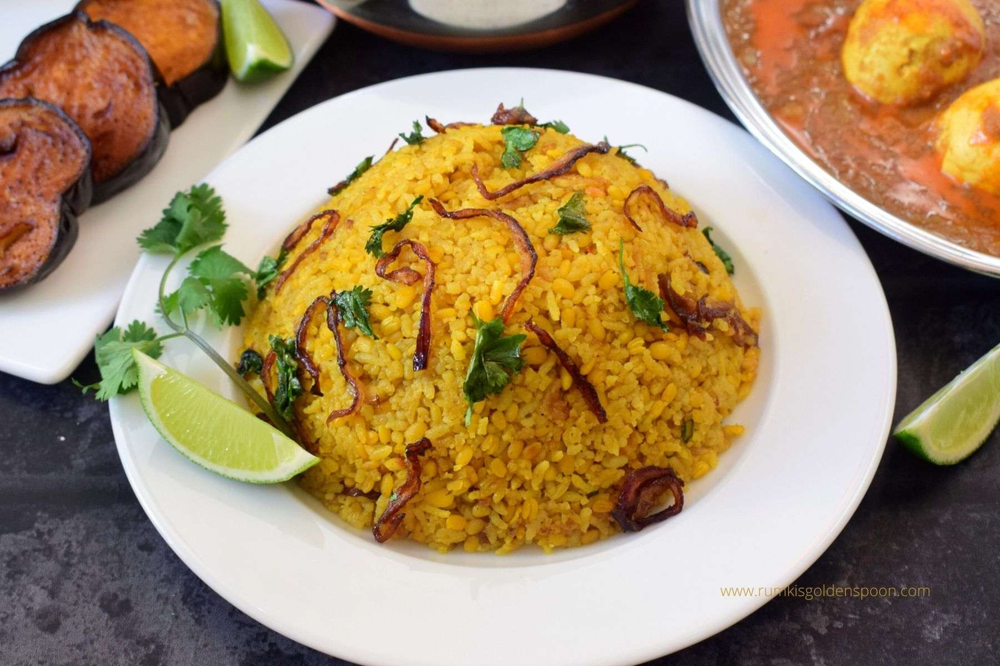

There are three list of my favorite foods with a brief description.
- Bhuna Khichuri
- Fried Fish
- Rice
Bhuna Khichuri
Bhuna khichuri recipe is an exemplary moong dal khichuri which is immensely popular in Bangladesh, West Bengal and few other parts of north east India. The texture of bhuna khichuri is completely different from other khichuri recipes. It is dry and grainy in texture exactly like pulao with extraordinary taste and flavour.
Click to view a recipe my favorite food websiteFried Fish
Fried fish is any fish or shellfish that has been prepared by frying. Often, the fish is covered in batter, egg and breadcrumbs, flour, or herbs and spices before being fried and served, often with a slice of lemon.
Rice
Rice is the seed of the grass species Oryza sativa or less commonly O. glaberrima. The name wild rice is usually used for species of the genera Zizania and Porteresia, both wild and domesticated, although the term may also be used for primitive or uncultivated varieties of Oryza